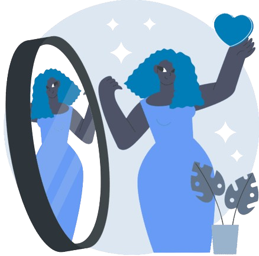

Construa uma Imagem Pessoal Autêntica nas Redes Nas redes sociais, tudo comunica. Desde uma simples bio até os stories do dia a dia, sua imagem digital impacta como as pessoas te veem — pessoal e profissionalmente. A construção da imagem pessoal vai muito além de likes ou seguidores. É sobre coerência, verdade, valores e responsabilidade. Uma presença online bem construída pode abrir portas, fortalecer conexões e inspirar confiança.
No mês de abril, nossa campanha traz conteúdos e dicas para você refletir, ajustar e fortalecer sua imagem online. Vamos juntos?
Participe!
Os brasileiros passam, em média, mais de três horas por dia na internet, sendo quase duas horas dedicadas exclusivamente às redes sociais. Essa intensa exposição digital transforma significativamente a forma como as pessoas se veem — e também como são vistas, principalmente em ambientes corporativos. Na tentativa de se encaixar ou conquistar espaço, muitos usuários acabam construindo perfis "perfeitos" nas plataformas digitais. Esse padrão irreal acaba gerando comparações constantes, o que pode afetar negativamente a autoestima. Estudos recentes mostram que cerca de 60% das pessoas já se sentiram ansiosas ou com o valor pessoal abalado pelo uso excessivo das redes sociais, especialmente Instagram e TikTok. Com isso, cresce a dependência da validação externa: likes, comentários e compartilhamentos passam a ser indicadores de valor pessoal. Esse ciclo pode comprometer o equilíbrio emocional e influenciar diretamente o desempenho profissional, já que a autoconfiança é fundamental para relações saudáveis no trabalho e na vida.
Lembre-se: o que vemos nas redes muitas vezes é uma versão editada da realidade. Evite comparar sua vida real com o recorte idealizado que os outros mostram.
Priorize perfis que inspiram, educam ou motivam. Silencie ou deixe de seguir conteúdos que te causam frustração ou insegurança.
Pratique pausas digitais. Desconectar um pouco pode ajudar a recentrar sua atenção no que realmente importa.
Reconheça seus progressos fora do ambiente virtual. Pequenas vitórias do dia a dia têm muito valor, mesmo que não sejam postadas.
Se o uso das redes estiver afetando sua autoestima, confiança ou bem-estar emocional, conversar com um psicólogo pode ser essencial.
Curtidas e comentários não definem quem você é. Seu valor não está nos números, mas em sua trajetória, caráter e autenticidade.
DICA 1 — Autenticidade Atrai
Evite exageros nos filtros e poses forçadas. Seja você mesmo! As pessoas se conectam com quem transmite verdade.
DICA 2 — Faça uma Limpeza Digital
Reveja postagens antigas. Elas ainda te representam? Apagar ou arquivar conteúdos é parte do processo.
DICA 3 — Imagem & Profissão
Pense sempre: se um recrutador visse meu perfil hoje, o que ele entenderia sobre mim?
DICA 4 — Tenha Propósito
Antes de postar, pergunte-se: isso soma algo? Representa quem eu sou? Inspira positivamente?